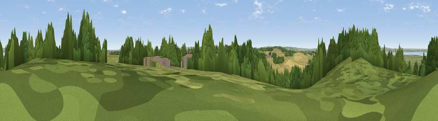

Northward Hill
#29242 in England · top 41% of its area beats it · near High HalstowThe view, rendered

A 360° render of this exact spot computed from the terrain model, tree cover and land cover — summer colours, afternoon light, calibrated against photographs of famous viewpoints. Real trees, hedges and buildings will differ in detail.
The panorama
Grey silhouette: terrain skyline in each direction (720 bearings, Earth curvature and refraction included). Dashed green: skyline with trees (+15 m) and buildings (+8 m) as obstacles. Blue strip: how far the ground is visible on each bearing.
Where the view opens
Wedge length = distance to the farthest visible ground on that bearing (vegetation-aware). Rings at 10, 25 and 50 km.
What fills the view
38% grassland · 31% woodland · 15% cropland · 9% built-up · 6% water · 1% wetland
Angular shares of the visible panorama (visual magnitude), not map area. Landscape diversity 0.63 (0–1 Shannon).
Key numbers
More beautiful places nearby
The staircase of upgrades: each row has a higher view potential than everything closer. Driving times are estimates from straight-line distance, calibrated against real road routing — check an actual route before setting out.
| Place | Direction | Drive | Score |
|---|---|---|---|
| Viewpoint near High Halstow | WNW · 0 km | ~1 min | 49.0 |
| Viewpoint near Cliffe Woods | SW · 5 km | ~11 min | 54.0 |
| Broom Hill | SW · 8 km | ~16 min | 54.9 |
| Viewpoint near Hadleigh | NNE · 10 km | ~20 min | 56.7 |
| Viewpoint near Hadleigh | NNE · 10 km | ~20 min | 57.4 |
| Viewpoint near Hadleigh | NNE · 10 km | ~20 min | 61.0 |
| Viewpoint near South Benfleet | N · 11 km | ~20 min | 62.9 |
| Viewpoint near Burham | SSW · 14 km | ~26 min | 63.1 |
51.45574, 0.56388 · source: dobih hill · position refined by local search. Computed location — check access rights before visiting.